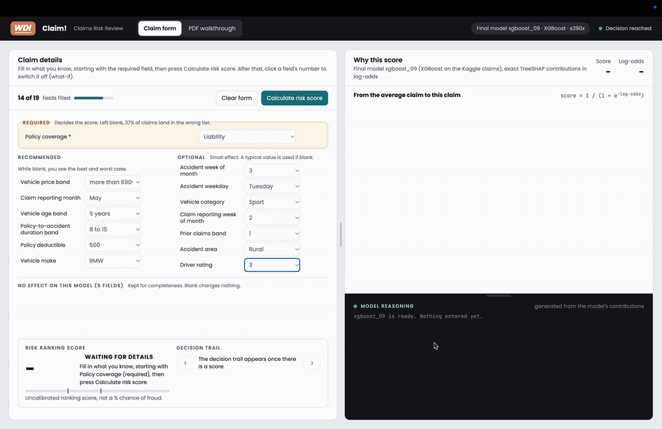
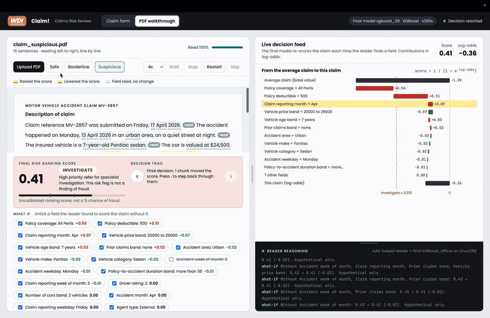
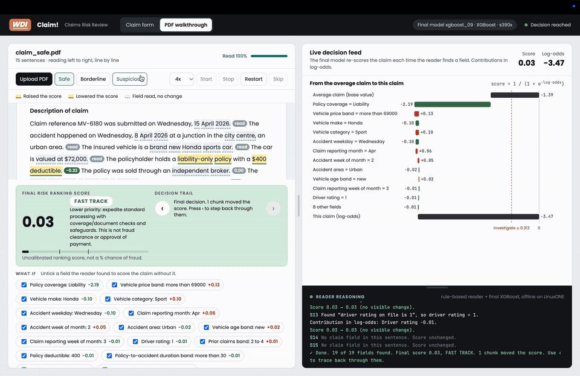
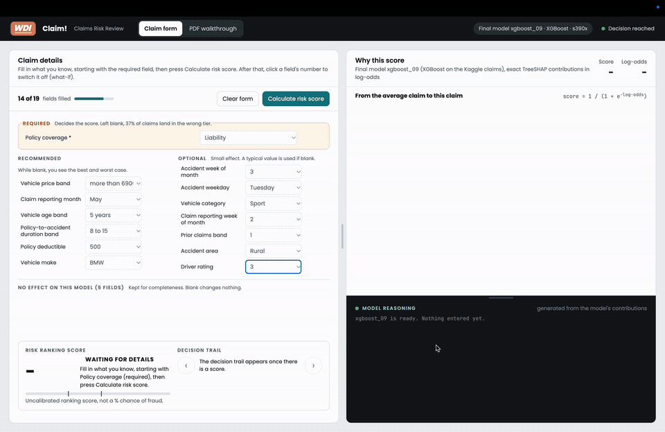

Jan to May 2027, incoming

Software Engineer Intern
GovTech Singapore, full-time
Incoming placement in Applications and Tools Development and Enhancement, Pricing Finance.
Hi everyone 👋, I’m Da Feng
I’m a Business Analytics (Computing) student at NUS, First Class Honours, specialising in Machine Learning and Fintech.

Here's what I've built

An AI lecture-comprehension platform that lets a student ask questions of a lecture as it happens.

An explainable insurance-claim risk scorer for claims officers, built by a team of six in one day.

A planner built because nothing else held the whole picture: classes, tasks, shared calendars and day marks for exams and trips, in one month grid.
A peer mentorship platform matching students with seniors who already passed the module they are about to fail.
A job-search platform pulling together three things students normally do in three different places: live job aggregation, automated resume-filling, and mock interview review.
Here's what I've built
An AI lecture-comprehension platform that lets a student ask questions of a lecture as it happens. The genuinely interesting problem was cost: routing questions dynamically between models cut inference spend by over 80% with no measurable drop in quality. Pitched to judges on the accessibility track.
Two steps and a student or professor account is ready. No setup call, no onboarding deck.

A professor uploads the slide deck once, then presses Go Live. Live-Sync pre-indexes the deck before the lecture even starts.

The professor just talks. Live-Sync is already listening, transcribing the lecture live through VideoDB, no typed prompts, no raised hand.

A student enters the code on screen and gets the live transcript, with one button to catch up if they lost the thread.
Answers come straight from that lecture's own slides and transcript, not a generic model response. Routing every question between a lightweight model and a flagship one is what keeps this affordable at scale.

Students flag lost, too fast, or right pace in real time, so the professor can see where the room actually is without stopping to ask.

Every module lands in one dashboard: jump into whatever lecture is live, or replay any chapter that already happened.

IBM Z Datathon, Oct 2026
WDI Insurance. We did it, so your claims officer doesn’t have to guess.
Claim! ranks motor insurance claims so a claims officer knows which ones to check first. It runs an XGBoost model trained on Kaggle claims data and shows the exact TreeSHAP contribution of every field in log-odds, so you can see why a claim got its score.
Every claim gets a risk ranking score and a tier: Fast track, Review or Investigate. We built it for the IBM Z Datathon as a team of six in one day, on an IBM LinuxONE server. The claims in the demo are fictional.
Fill in the claim details and press Calculate risk score. The score shows up with the fields that pushed it up or down.

The reader goes through the claim PDF line by line and highlights the key words. The live decision feed on the right updates as it reads.

Same reader on a suspicious claim, and the final score lands on Investigate. Then fields get switched off to see how the score would change.


Incoming placement in Applications and Tools Development and Enhancement, Pricing Finance.

Built the Block Committee Management System (BCMS), a full-stack Next.js 16, TypeScript and Supabase platform on Vercel that is now the system of record for 44 events. Designed a 12-table PostgreSQL schema with 35 row-level-security policies and a custom JWT access-token hook for database-level, role-based access control, and an idempotent notification pipeline (Vercel Cron, Telegram Bot API) with append-only log deduplication: 47 alerts delivered over six weeks with zero duplicates.

Supports Siloam, a nonprofit partner, with data management and Tableau dashboards to track and report on its operations. Designs and maintains backend REST APIs and SQL database schemas (Node.js, PostgreSQL) for internal tooling that syncs and validates partner data before it reaches the dashboard, plus automated ETL scripts and scheduled jobs that cut manual data-entry errors and dashboard refresh time.

Leads weekly tutorials and lab sessions on Java fundamentals, guiding students through problem sets, code reviews and debugging. Grades assignments and practical exams with individual feedback, and runs consultation hours for students struggling with core concepts ahead of assessments.

Automated monthly manpower reporting with Python, cutting report turnaround by an estimated 80%. Built an Excel-based pipeline tracking employee queries, concerns and company review data into a Power BI dashboard that leadership uses to find improvement areas, and an organisational data pipeline on SharePoint that quantifies savings per action, contributing to an estimated 20% reduction in yearly support-services spend, with role-based access controls over sensitive data.

Ran e-commerce operations across TikTok Shop, Shopee, Lazada and Qoo10. Built a Java pipeline syncing Shopee and Lazada customer comments to the storefront homepage in near real time, cutting turnaround from about two minutes to seconds per comment and removing the manual monitoring work, and applied SEO and marketing analytics to product visibility and conversion.

Resolved customer inquiries, returns and complaints with CRM systems in a high-volume retail environment, and coordinated with other departments to make front-of-house service faster.

Directed and trained a platoon of soldiers, managing personnel, safety and logistics in operational settings. Platoon Commander for a bilateral exercise with the German Armed Forces and Conducting Officer for Armour live firing in Germany. National Day Parade 2024 participant; managed company security and funds.

Internships, projects, or a disagreement about whether the model is actually learning anything.
Email is fastest: dafengtan1444@gmail.com